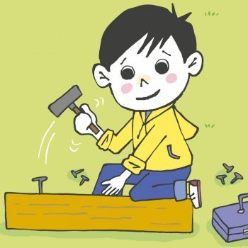

Había un niño que tenía muy, pero que muy mal carácter. Un día, su padre le dio una bolsa con clavos y le dijo que cada vez que perdiera la calma, que él clavase un clavo en la cerca de detrás de la casa.
El primer día, el niño clavó 37 clavos en la cerca. Al día siguiente, menos, y así con los días posteriores. Él niño se iba dando cuenta que era más fácil controlar su genio y su mal carácter, que clavar los clavos en la cerca.
Finalmente llegó el día en que el niño no perdió la calma ni una sola vez y se lo dijo a su padre que no tenía que clavar ni un clavo en la cerca. Él había conseguido, por fin, controlar su mal temperamento.
Su padre, muy contento y satisfecho, sugirió entonces a su hijo que por cada día que controlase su carácter, sacase un clavo de la cerca.
Los días se pasaron y el niño pudo finalmente decir a su padre que ya había sacado todos los clavos de la cerca. Entonces el padre llevó a su hijo, de la mano, hasta la cerca de detrás de la casa y le dijo:
- Mira, hijo, has trabajo duro para clavar y quitar los clavos de esta cerca, pero fíjate en todos los agujeros que quedaron en la cerca. Jamás será la misma.
Lo que quiero decir es que cuando dices o haces cosas con mal genio, enfado y mal carácter, dejas una cicatriz, como estos agujeros en la cerca. Ya no importa tanto que pidas perdón. La herida estará siempre allí. Y una herida física es igual que una herida verbal.
Los amigos, así como los padres y toda la familia, son verdaderas joyas a quienes hay que valorar. Ellos te sonríen y te animan a mejorar. Te escuchan, comparten una palabra de aliento y siempre tienen su corazón abierto para recibirte.
Las palabras de su padre, así como la experiencia vivida con los clavos, hicieron que el niño reflexionase sobre las consecuencias de su carácter. Y colorín colorado, este cuento se ha acabado.
FIN